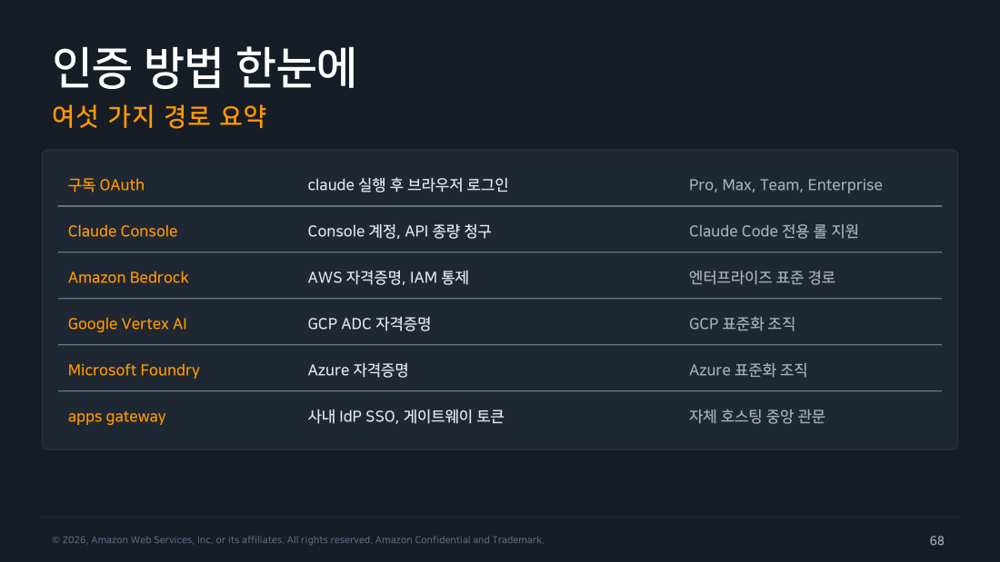
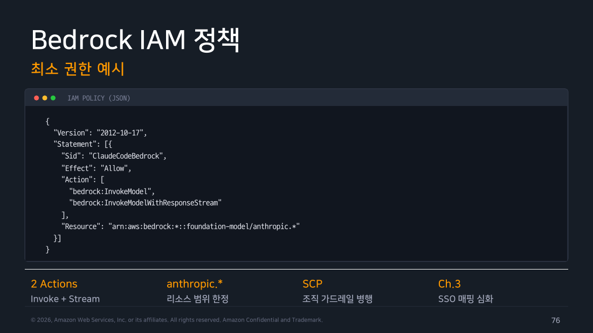

Part 4 — 인증¶
한 줄 요약¶
인증 경로는 6가지입니다. 여러 개가 동시에 설정되어 있으면 우선순위 규칙으로 하나가 선택되고, 무엇이 선택됐는지는 /status로 확인합니다. 개인은 구독 OAuth, 조직은 Bedrock 또는 게이트웨이가 표준입니다.
왜 알아야 하나¶
인증에서 가장 흔한 트러블은 이런 모습입니다.
"구독 결제했는데 왜 API 크레딧이 나가지?" "팀원은 되는데 나만 안 돼."
원인은 거의 항상 같습니다. 환경변수 하나가 조용히 이기고 있는 것입니다. 예전에 테스트하려고 .zshrc에 넣어둔 ANTHROPIC_API_KEY를 잊었다든가요.
그래서 인증에서 진짜 실전 지식은 "어떻게 로그인하나"가 아니라 "여러 개가 있을 때 뭐가 이기나" 입니다. 이 파트의 절반이 그 이야기입니다.
1. 내 상황에 맞는 경로 고르기¶
경로가 여섯 개라고 하면 막막하지만, 누가 쓰느냐로 나누면 선택은 거의 자동입니다.
flowchart TD
Q{"누가 쓰는가?"}
Q -->|"개인 개발자"| P1["<b>구독 OAuth</b><br/>Pro / Max<br/><i>가장 간단. 브라우저 로그인 한 번</i>"]
Q -->|"조직 — API 종량 청구 선호"| P2["<b>Claude Console</b><br/>조직 초대 + 롤 부여<br/><i>Claude Code 전용 롤로 권한 제한</i>"]
Q -->|"조직 — 이미 클라우드 사용 중"| P3{"어느 클라우드?"}
Q -->|"조직 — 중앙 관문 필요"| P4["<b>apps gateway</b><br/>사내 IdP SSO<br/><i>그룹별 모델 접근·지출 한도</i>"]
P3 -->|AWS| B["<b>Amazon Bedrock</b><br/>IAM·SSO 그대로 재사용"]
P3 -->|GCP| V["<b>Google Vertex AI</b><br/>ADC 자격증명"]
P3 -->|Azure| F["<b>Microsoft Foundry</b><br/>Azure 자격증명"]
style Q fill:#673ab7,stroke:#4527a0,stroke-width:3px,color:#fff
style P1 fill:#e8f5e9,stroke:#388e3c,color:#000
style P2 fill:#e3f2fd,stroke:#1976d2,color:#000
style P3 fill:#fff3e0,stroke:#f57c00,color:#000
style P4 fill:#ede7f6,stroke:#673ab7,color:#000
style B fill:#fff8e1,stroke:#ffa000,color:#000
style V fill:#fff8e1,stroke:#ffa000,color:#000
style F fill:#fff8e1,stroke:#ffa000,color:#000정리하면 개인은 구독 OAuth 하나로 끝나고, 조직은 이미 쓰고 있는 클라우드를 따라가는 것이 기본입니다. 아래에서 하나씩 보겠습니다.

▲ 교재 슬라이드 68 — 인증 방법 6가지 한눈에
2. 구독 OAuth — 개인이라면 여기서 끝¶
가장 간단합니다. 그냥 실행하면 됩니다.
브라우저가 열리지 않는 환경도 있습니다. WSL2, SSH 접속, 컨테이너처럼 콜백이 막힌 경우입니다. 이때는 c 키를 누르면 로그인 URL이 클립보드에 복사되고, 다른 기기 브라우저에서 로그인한 뒤 표시된 코드를 Paste code here if prompted에 붙여넣으면 됩니다.
쓸 수 있는 계정은 개인 구독인 Pro와 Max, 조직 초대 계정인 Team과 Enterprise입니다. Free 플랜은 사용할 수 없습니다.
로그인하면 자격증명이 OS 보안 저장소에 보관되고, /logout으로 해제할 수 있습니다.
얼마나 썼는지 보기¶
> /usage
# 플랜 한도 대비 사용량, 리셋 시점 표시
# 무엇이 한도를 소모하는지 항목별 분해
# 스킬, 서브에이전트, MCP 서버별 기여 확인
> /cost # /usage 의 별칭
여기서 중요한 건 항목별 분해입니다. 그냥 "80% 썼습니다"가 아니라 어떤 스킬, 어떤 서브에이전트, 어떤 MCP 서버가 얼마나 먹었는지 보여줍니다. 그래서 과소비 지점을 특정할 수 있습니다.
한도가 임박했다면
/model haiku로 전환하면 소비가 크게 줄어듭니다. 간단한 변환·검색·분류 작업은 Haiku로 충분합니다.
다만 Part 10의 실측에서는 haiku가 더 싸긴 했지만 "한 문장으로"라는 지시를 덜 지켜서 출력 토큰을 2.4배 더 쓰기도 했습니다. 지시 준수가 중요한 작업에서는 오히려 손해일 수 있습니다.
3. Claude Console — API 종량 청구¶
조직이 API 종량제를 선호한다면 Console 경로입니다. 흐름은 세 단계입니다.
먼저 조직에 사용자를 초대합니다. Settings → Members에서 대량 초대하거나 SSO를 연동합니다.
그다음 롤을 부여합니다. 여기가 중요합니다. 롤이 두 종류인데 권한 범위가 다릅니다.
- Claude Code 롤 — Claude Code 전용 키만 만들 수 있음
- Developer 롤 — 전체 키 생성 가능
Tip
최소권한 원칙대로라면 개발자에게는 Claude Code 롤을 주는 게 맞습니다. 키가 유출되더라도 용도가 Claude Code로 제한되어 있어 피해 범위가 줄어듭니다.
마지막으로 구성원이 설치 후 Console 자격증명으로 로그인하면 됩니다. 사용량은 조직 Console에 집계되고 예산 알림도 설정할 수 있습니다.
API 키를 환경에 넣기¶
셸에서는 이렇게 씁니다.
프로젝트별로 관리하려면 direnv를 씁니다. 단, .envrc는 반드시 .gitignore에 넣어야 합니다.
컨테이너 환경에서는 런타임 주입이 원칙입니다.
docker run -e ANTHROPIC_API_KEY ...
kubectl create secret generic claude-key \
--from-literal=ANTHROPIC_API_KEY=sk-ant-...
키는 X-Api-Key 헤더로 전송되고, 대화형에서 처음 쓸 때 1회 승인을 요구합니다.
키를 안전하게 다루는 네 가지 습관¶
코드에 넣지 않습니다. 소스와 컨테이너 이미지에 키를 굽지 말고, pre-commit 시크릿 스캐너로 커밋 자체를 차단합니다.
볼트에서 발급받습니다. Secrets Manager나 Vault에서 키를 받고 apiKeyHelper로 동적 주입합니다. 헬퍼는 기본 5분마다 갱신합니다.
최소 권한을 줍니다. 앞서 말한 Claude Code 롤로 키의 용도 자체를 제한합니다.
주기적으로 회전하고 즉시 폐기합니다. 정기 회전 정책을 만들고, 퇴사나 유출 시의 즉시 폐기 절차를 문서화해둡니다.
4. Amazon Bedrock — 조직의 표준 경로¶
인프라 엔지니어에게 가장 중요한 경로입니다. 설정 자체는 놀랍도록 간단합니다.
# Bedrock 경로 활성화
export CLAUDE_CODE_USE_BEDROCK=1
export AWS_REGION=ap-northeast-2
# 자격증명은 표준 AWS 체계 그대로
aws sso login --profile dev # 또는 IAM Role, 환경변수
export AWS_PROFILE=dev
# 실행
claude
# /status 로 활성 공급자와 모델 확인
현장 메모 — 왜 이 경로가 조직 표준이 되는가
별도의 API 키 발급·배포 체계를 만들 필요가 전혀 없습니다. 이미 운영 중인 AWS SSO와 IAM Role을 그대로 씁니다. 청구도 AWS 계정으로 통합되고, 트래픽이 AWS 계정 경계 안에서 처리되므로 보안 심사 난이도가 크게 내려갑니다. 새 벤더를 하나 늘리는 게 아니라 기존 AWS 거버넌스 안에 들어오는 것이라 설득 논리가 완전히 달라집니다.
주의할 점 — sonnet alias가 한 세대 보수적입니다¶
Bedrock에서 opus는 Opus 4.8로 해석되지만, sonnet은 Sonnet 4.5입니다. Anthropic API의 Sonnet 5보다 한 단계 낮습니다.
v2.1.207에서 기본값이 크게 바뀌었습니다
그 이전에는 Bedrock의 기본 모델이 Sonnet 4.5였고 opus alias도 Opus 4.6이었습니다. 지금은 기본 모델이 us.anthropic.claude-opus-4-8 입니다.
Opus는 Sonnet보다 토큰당 단가가 높으므로, 모델을 고정하지 않은 배포는 v2.1.207 이상으로 올라가면 Opus 요금으로 청구됩니다. 조직 배포라면 반드시 버전을 고정하세요.
최신·특정 모델을 쓰려면 전체 모델명이나 inference profile ARN을 직접 지정합니다. 팀에 배포할 때는 alias에 맡기지 말고 환경변수로 못박는 게 원칙입니다.
export ANTHROPIC_DEFAULT_OPUS_MODEL='us.anthropic.claude-opus-4-8'
export ANTHROPIC_DEFAULT_SONNET_MODEL='us.anthropic.claude-sonnet-4-6'
export ANTHROPIC_DEFAULT_HAIKU_MODEL='us.anthropic.claude-haiku-4-5-20251001-v1:0'
배경 작업(세션 제목 생성 등)에 쓰이는 소형·빠른 모델은 ANTHROPIC_DEFAULT_HAIKU_MODEL로 지정합니다. 예전 자료에 나오는 ANTHROPIC_SMALL_FAST_MODEL은 deprecated입니다.
리전 전략도 신경 써야 합니다. 모델마다 제공 리전이 다르므로 cross-region inference profile로 지연과 가용성의 균형을 잡습니다.
Warning
Bedrock에서는 WebSearch 도구를 쓸 수 없습니다. (Part 6의 웹 도구 참고)
그리고 인증이 AWS 자격증명으로 처리되므로 /logout 명령도 동작하지 않습니다.
IAM 정책¶
호출의 핵심은 InvokeModel(일반)과 InvokeModelWithResponseStream(스트리밍) 두 개지만, 실무에서 쓰는 cross-region inference profile까지 감안하면 두 개로는 부족합니다. 공식 권장 정책은 이렇습니다.
{
"Version": "2012-10-17",
"Statement": [
{
"Sid": "AllowModelAndInferenceProfileAccess",
"Effect": "Allow",
"Action": [
"bedrock:InvokeModel",
"bedrock:InvokeModelWithResponseStream",
"bedrock:ListInferenceProfiles",
"bedrock:GetInferenceProfile"
],
"Resource": [
"arn:aws:bedrock:*:*:inference-profile/*",
"arn:aws:bedrock:*:*:application-inference-profile/*",
"arn:aws:bedrock:*:*:foundation-model/*"
]
},
{
"Sid": "AllowMarketplaceSubscription",
"Effect": "Allow",
"Action": [
"aws-marketplace:ViewSubscriptions",
"aws-marketplace:Subscribe"
],
"Resource": "*",
"Condition": {
"StringEquals": { "aws:CalledViaLast": "bedrock.amazonaws.com" }
}
}
]
}
현장 메모 — 왜 GetInferenceProfile이 필요한가
Claude Code가 application inference profile ARN을 실제 기반 모델로 해석할 때 씁니다. 이 권한이 없어도 다른 형태로 한 번 재시도해서 결과적으로는 성공하지만, 새 모델마다 왕복이 한 번씩 더 붙습니다.
특히 정책 범위가 좁은 AWS_BEARER_TOKEN_BEDROCK 배포에서 자주 걸립니다.
더 조이고 싶다면 리소스를 특정 inference profile ARN으로 한정하면 됩니다. foundation-model/*만 허용한 정책으로는 inference profile 호출이 동작하지 않으니 주의하세요.
조직 차원의 SCP 가드레일과 병행하면 더 안전합니다. 비용 추적과 접근 통제를 단순화하려면 Claude Code 전용 AWS 계정을 파는 것도 공식 권장 사항입니다.

▲ 교재 슬라이드 76 — Bedrock IAM 최소 권한 정책
5. Vertex AI와 Microsoft Foundry¶
GCP를 표준화한 조직은 Google Vertex AI, Azure를 쓰는 조직은 Microsoft Foundry를 씁니다.
동작 방식은 Bedrock과 같습니다. CLAUDE_CODE_USE_VERTEX 또는 CLAUDE_CODE_USE_FOUNDRY 환경변수로 경로를 켜고, 자격증명은 각 클라우드의 표준 체계(GCP는 ADC, Azure는 Azure 자격증명)를 그대로 씁니다.
6. apps gateway — 자체 호스팅 중앙 관문¶
조직 규모가 커지면 결국 이 구조로 수렴합니다.
게이트웨이가 사내 IdP로 개발자를 인증하고, 추론 요청을 설정된 클라우드로 라우팅합니다. 핵심은 이것입니다. 개발자 세션의 유일한 자격증명은 게이트웨이 토큰입니다. 클라우드 자격증명을 개인에게 뿌릴 필요가 없습니다.
flowchart LR
D["개발자"] -->|"① /login<br/>사내 IdP SSO"| G["<b>apps gateway</b><br/>자체 호스팅"]
G -->|"② 그룹별 모델 접근<br/>지출 한도 적용"| G
G -->|"③ 라우팅"| P["Bedrock / GCP / Foundry"]
G -.->|"④ OTLP"| T["텔레메트리<br/>사용량·비용 집계"]
style D fill:#e3f2fd,stroke:#1976d2,color:#000
style G fill:#673ab7,stroke:#4527a0,stroke-width:3px,color:#fff
style P fill:#fff3e0,stroke:#f57c00,color:#000
style T fill:#e8f5e9,stroke:#388e3c,color:#000이 구조의 이점은 세 가지입니다. 개발자에게 클라우드 키를 안 줘도 되고, 그룹별 모델 접근 제어와 지출 한도를 한 곳에서 걸 수 있으며, 사용량과 비용이 OTLP로 자동 집계됩니다.
7. 충돌하면 무엇이 이기는가 — 우선순위¶
이 파트에서 가장 실용적인 내용입니다.
여러 자격증명이 동시에 존재할 때 위에서부터 내려오다가 가장 먼저 발견되는 것이 이깁니다.
아래는 ANTHROPIC_API_KEY만 설정되어 있는 상태에서 어떤 일이 벌어지는지 보여줍니다. 위에서부터 훑어 내려오다 3순위에서 멈추고, 그 아래의 구독 OAuth는 평가조차 되지 않습니다.

가장 흔한 사고
구독을 결제했는데 예전에 설정한 ANTHROPIC_API_KEY가 남아 있으면, 3순위가 6순위를 이겨서 API 종량 요금이 나갑니다.
해결은 간단합니다.
8. 자격증명은 어디에 저장되나¶
플랫폼마다 다릅니다.
macOS는 암호화된 Keychain에 넣습니다. OS 보안 저장소를 그대로 쓰는 가장 안전한 형태입니다.
Linux는 ~/.claude/.credentials.json 파일에 저장하고 모드를 0600으로 잠급니다. 소유자만 읽을 수 있습니다.
Windows는 %USERPROFILE%\.claude\.credentials.json이며 프로파일 ACL을 상속합니다.
이 파일들은 /login과 /logout이 관리합니다. 직접 편집은 권장하지 않습니다. 저장 위치를 바꿔야 한다면 CLAUDE_CONFIG_DIR 환경변수를 씁니다(Linux, Windows 해당).
9. CI에서 쓸 장기 토큰¶
CI나 스크립트 환경에는 브라우저가 없습니다. 이럴 때 쓰는 게 setup-token입니다.
# 토큰 발급
claude setup-token
# OAuth 승인 후 토큰을 터미널에 출력 (자동 저장하지 않음)
# 사용
export CLAUDE_CODE_OAUTH_TOKEN=your-token
claude -p "analyze this repo"
특성을 알아둬야 합니다. 유효 기간은 1년이고 구독 요금제가 필요합니다. 스코프는 추론 전용이라 Remote Control은 되지 않습니다.
그리고 출력만 하고 저장하지 않습니다. 화면에 뜬 그 순간이 유일한 기회이므로, 발급 즉시 파이프라인 시크릿에 넣어야 합니다.
10. 문제가 생겼을 때 — 3종 명령¶
> /status
# 활성 인증 방법, 공급자, 모델, 계정 표시
# ★ 인증 문제 진단의 1순위 명령
> /logout
# 현재 자격증명 해제
> /login
# 재인증. gateway 환경에서는 SSO 흐름
무슨 문제든 /status부터 봅니다. 내가 의도한 공급자와 모델이 잡혀 있는지가 여기서 바로 드러납니다.
직접 해보기¶
# 1. 현재 무엇으로 인증되어 있는지
$ claude
> /status
# 2. 환경변수가 조용히 이기고 있는지 점검
$ env | grep -E "ANTHROPIC|CLAUDE_CODE"
# 3. 사용량 확인
> /usage
- 성공 판정:
/status출력의 인증 방법·공급자·모델이 내가 의도한 것과 일치하면 OK입니다.
흔한 오해 바로잡기¶
-
"구독했으니 API 요금은 안 나간다" —
ANTHROPIC_API_KEY가 남아 있으면 그쪽이 이깁니다./status로 확인하세요. -
"Bedrock 쓰면 alias가 알아서 최신을 잡아준다" —
opus는 Opus 4.8이지만sonnet은 Sonnet 4.5입니다. 그리고 v2.1.207 전후로 매핑이 바뀌었으니, 팀 배포라면 alias에 맡기지 말고 전체 모델명으로 고정하세요. -
"setup-token으로 뭐든 된다" — 추론 전용 스코프입니다. Remote Control은 안 됩니다.
-
"credentials.json을 편집하면 된다" — 직접 편집은 비권장입니다.
/login과/logout으로 관리하세요.
정리¶
인증 경로는 구독 OAuth / Console / Bedrock / Vertex / Foundry / apps gateway 여섯 가지입니다.
선택 기준은 단순합니다. 개인은 구독 OAuth, 조직은 이미 쓰는 클라우드(대개 Bedrock) 또는 게이트웨이입니다.
여러 자격증명이 공존하면 우선순위 6단계(+gateway 예외 0순위) 로 하나가 선택됩니다. 구독 OAuth가 가장 약하다는 걸 기억하세요.
alias 해석은 공급자마다 다릅니다. Bedrock에서 opus는 Opus 4.8이지만 sonnet은 Sonnet 4.5입니다. 팀 배포라면 전체 모델명으로 고정하세요.
문제가 생기면 /status가 1순위 진단 명령입니다.
CI에는 claude setup-token으로 만든 1년짜리 추론 전용 토큰을 씁니다.
출처¶
- Claude Code Deep Dive Workshop — Chapter 1 / Part 4: Authentication (18p)
- 공식 문서: Authentication · Amazon Bedrock · Google Vertex AI · Model configuration · Costs